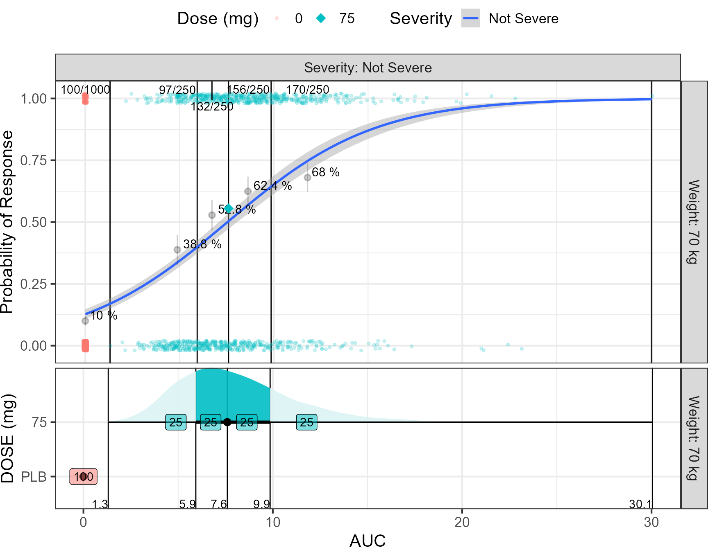
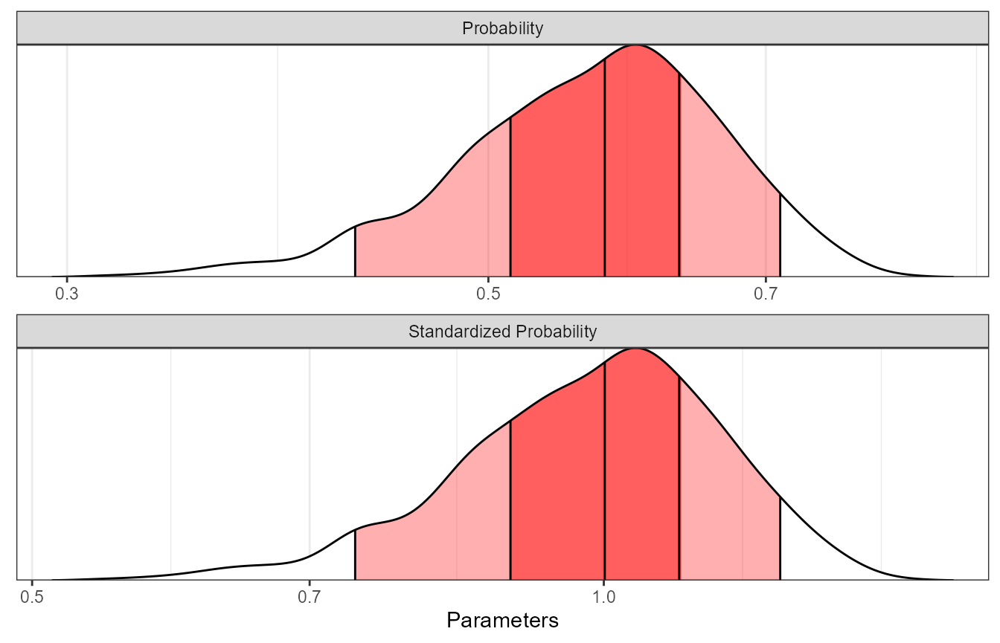
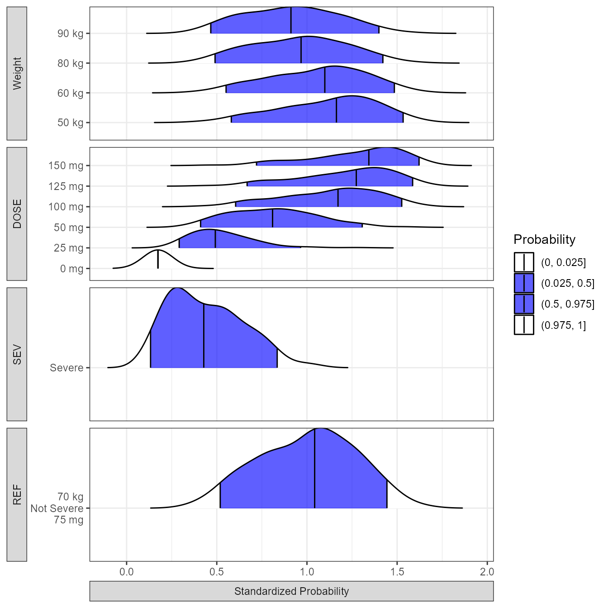
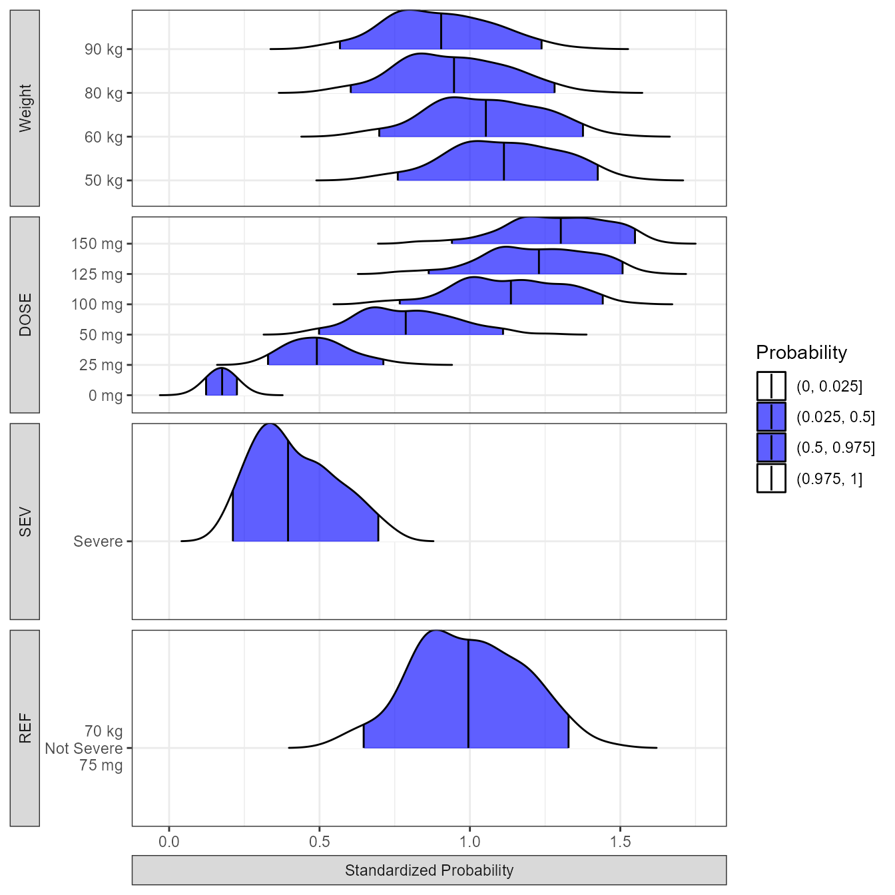

Exposure-Response Model Assessing the Impact of Covariates on Probabilities of Clinical Outcome
Source:vignettes/Exposure_Response_Example.Rmd
Exposure_Response_Example.RmdHere we illustrate the approach using a Binary response linked to exposure (AUC) via a saturating EMAX function. Weight is a covariate on Clearance. We also have a disease severity categorical covariate on EMAX where patient with severe disease have a lower EMAX.
Specifying an Exposure Response Model using
mrgsolve
# the typical probability from the model parameters will be :
TypicalProb<- 1/(1+exp(-(log(0.1/(1-0.1)) + (5*75/10/(7.5+75/10)))))
MaxProb<- 1/(1+exp(-(log(0.1/(1-0.1)) + (5*750/10/(7.5+750/10)))))
MinProb<- 1/(1+exp(-(log(0.1/(1-0.1)) + (5*0/10/(7.5+0/10)))))
exprespmodel <- '
$PLUGIN Rcpp
$PARAM @annotated
TVCL : 10 : Clearance CL (L/h)
WTCL : 0.75: Weight on CL (ref. 70 kg)
TVEMAX : 5 : Maximum Drug Effect
SEVEMAX : 3 : Severity Reduction of Drug Effect
AUC50 : 7.5 : Area Under the Curve providing half maximal response
BASEP : 0.1 : Baseline Probability of Response
$PARAM @annotated // reference values for covariate
WT : 70 : Weight (kg)
SEV : 0 : Sex (0=Female, 1=Male)
DOSE : 75 : Dose (mg)
$OMEGA @annotated @block
nCL :0.09 : ETA on CL
$PRED
double CL = TVCL *
pow((WT/70.0), WTCL)*exp(ETA(1));
double EMAX = TVEMAX - SEVEMAX*(SEV == 1) ;
double Intercept = log(BASEP/(1-BASEP));
capture CLi = CL;
capture AUC = DOSE/CL;
capture LGST = Intercept + (EMAX*AUC/(AUC50+AUC));
capture P1 = 1/(1+exp(-LGST));
capture DV = R::runif(0,1)< P1 ? 1 : 0;
'
modexprespsim <- mcode("exprespmodel", exprespmodel)
simdata <- expand.idata(SEV=c(0),
DOSE = c(0,75),
ID = 1:1000) %>%
dplyr::mutate(WT = 70) #exp(rnorm(n(),log(70),0.3)
set.seed(466548)
simout <- modexprespsim %>%
data_set(simdata) %>%
carry.out(WT, DOSE, SEV) %>%
mrgsim()%>%
as.data.frameProbability of Cure
This is a plot of the disease being cured versus PK exposure by disease severity and by Weight intervals.
WT_names <- c(
'70'="Weight: 70 kg"
)
SEV_names <- c(
'0'="Severity: 0 (Not Severe)"
)
probplot<- ggplot(simout, aes(AUC,DV,linetype=factor(SEV))) +
facet_grid( WT~SEV,labeller=labeller(WT=WT_names,SEV=SEV_names))+
geom_point(position=position_jitter(height=0.02,width=0.1),
aes(color=factor(DOSE)),size=1,alpha=0.5)+
geom_line(aes(y=P1),color="black",size=1.1)+
geom_label(data=data.frame(
x=9,y=TypicalProb,label=paste(round(100*TypicalProb,1),"%"),SEV=0),
aes(x=x,y=y,label=label),fill="transparent")+
geom_label(data=data.frame(
x=0.37,y=0.1,label=paste(round(100*0.1,1),"%"),SEV=0),
aes(x=x,y=y,label=label),fill="transparent")+
labs(color="Dose (mg)",y="Probability of Response",
linetype="Severity")+
theme_bw() +
theme(legend.position = "top")
probplot
simoutbsvplacebo <- simout %>%
filter(DOSE==0)%>%
mutate(LGST =LGST)%>%
gather(paramname, paramvalue,LGST,P1)%>%
group_by(paramname)%>%
dplyr::summarize(P50 = quantile(paramvalue, 0.5)
)
simoutbsv <- simout %>%
mutate(logodds =LGST)%>%
filter(DOSE==75)
# the probability of response at the typical AUC
simoutbsvlong <- simoutbsv %>%
mutate(P1std=P1/TypicalProb) %>%
gather(paramname, paramvalue,P1std,P1)
yvar_names <- c(
'P1std'="Standardized Probability",
'P1'="Probability"
)
pbsvranges<- ggplot(simoutbsvlong, aes(
x = paramvalue,
y = paramname,
fill = factor(..quantile..),
height = ..ndensity..)) +
facet_wrap(paramname~. , scales="free", ncol=1,
labeller=labeller(paramname=yvar_names) ) +
stat_density_ridges(
geom="density_ridges_gradient", calc_ecdf=TRUE,
quantile_lines=TRUE, rel_min_height=0.001, scale=0.9,
quantiles=c(0.05, 0.25, 0.5, 0.75, 0.95)) +
scale_fill_manual(
name="Probability",
values=c("white", "#FF000050", "#FF0000A0", "#FF0000A0", "#FF000050", "white"),
labels = c("(0, 0.05]", "(0.05, 0.25]",
"(0.25, 0.5]", "(0.5, 0.75]",
"(0.75, 0.95]", "(0.95, 1]")) +
theme_bw() +
theme(
legend.position = "none",
axis.text.y = element_blank(),
axis.ticks.y = element_blank(),
axis.title.y = element_blank()) +
labs(x="Parameters", y="") +
scale_x_log10() +
coord_cartesian(expand=FALSE)
pbsvranges
simoutbsvranges <- simoutbsvlong %>%
group_by(paramname)%>%
dplyr::summarize(
P05 = quantile(paramvalue, 0.05),
P25 = quantile(paramvalue, 0.25),
P50 = quantile(paramvalue, 0.5),
P75 = quantile(paramvalue, 0.75),
P95 = quantile(paramvalue, 0.95))
simoutbsvranges
#> # A tibble: 2 × 6
#> paramname P05 P25 P50 P75 P95
#> <chr> <dbl> <dbl> <dbl> <dbl> <dbl>
#> 1 P1 0.425 0.514 0.576 0.630 0.712
#> 2 P1std 0.740 0.893 1.00 1.10 1.24Computing the Odds and Probabilities
Here we show how the odds and probabilities can be computed. We already know that the distribution of AUC depends on the Dose and on the clearance distributions. The model had five parameters shown in red, the dose, disease severity and weight were covariates and are shown in green. A Change in body weight will trigger a change in Clearance which in turn will control the AUC. To define an odds ratio we need to define a reference odds with reference covariate values Severity = 0 and changes in covariate values for example Severity = 1 (everything else being equal). For nonlinear relationships, in addition to the covariate unit change e.g. 25 mg change of dose it is important to define what reference value we are using e.g. A change from Placebo = 0 mg to 25 mg is not the same as a change from the typical dose of 75 mg increasing it to 100 mg.
where: \[AUC = \left(\frac { \color{green}{Dose}} {\color{red}{CL} \times \left( \frac { \color{green}{Weight}} {70}\right)^{WTCL} \times exp(\eta{CL}) }\right)\] \[E_{max}= \color{red}{E_{max} \left(intercept \right)} + \color{red}{SevE_{max}}\times\left(\color{green}{Severity} = 1\right) \] \[log(odds) = \color{red}{intercept} + \left( \frac {E_{max} \times \color{blue}{AUC}} {\color{red}{AUC_{50}} +\color{blue}{AUC} }\right)\]
set.seed(678549)
thmeans <- c(10,0.75, #TVCL WTCL
5,3, # TVEMAX SEVEMAX
7.5, # AUC50
0.1) #BASEP
thvariances<- (thmeans*0.15)^2
thecorrelations <- matrix(ncol=length(thmeans),nrow=length(thmeans))
diag(thecorrelations)<- 1
thecorrelations[lower.tri(thecorrelations, diag = FALSE)]<- 0.2
thecorrelations[upper.tri(thecorrelations, diag = FALSE)]<- 0.2
thevarcovmatrix<- diag(sqrt(thvariances))%*%thecorrelations%*%diag(sqrt(thvariances))
sim_parameters <- MASS::mvrnorm(n = nsim, mu=as.numeric(thmeans),
Sigma=thevarcovmatrix, empirical = TRUE)
colnames(sim_parameters) <- colnames(thevarcovmatrix) <- c("TVCL","WTCL",
"TVEMAX","SEVEMAX","AUC50",
"BASEP")
sim_parameters<- as.data.frame(sim_parameters)
reference.values <- data.frame(WT = 70, DOSE = 75, SEV = 0 )
covcomb <- expand.modelframe(
WT = c(50,60,70,80,90),
DOSE = c(0,25,50,75,100,125,150),
SEV = c(0,1),
rv = reference.values)
covcomb <- covcomb[!duplicated(
paste(covcomb$WT,covcomb$WT,covcomb$DOSE,covcomb$SEV)),]
covcomb$ID <- 1:nrow(covcomb)
iter_sims <- NULL
for(i in 1:nsim) {
idata <- as.data.frame(covcomb)
idata$covname<- NULL
data.all <- idata
data.all$TVCL <- as.numeric(sim_parameters[i,1])
data.all$WTCL <- as.numeric(sim_parameters[i,2])
data.all$TVEMAX <- as.numeric(sim_parameters[i,3])
data.all$SEVEMAX <- as.numeric(sim_parameters[i,4])
data.all$AUC50 <- as.numeric(sim_parameters[i,5])
data.all$BASEP <- as.numeric(sim_parameters[i,6])
out <- modexprespsim %>%
data_set(data.all) %>%
carry.out(CL,WT, DOSE, SEV, AUC) %>%
zero_re() %>%
mrgsim()
dfsimunc <- as.data.frame(out%>% mutate(rep = i) )
iter_sims <- rbind(iter_sims,dfsimunc)
}
stdprobplot<- ggplot(iter_sims, aes(DOSE,P1,col=factor(SEV) ) )+
geom_point(aes(group=interaction(ID,rep)),alpha=0.5,size=3)+
geom_hline(yintercept=TypicalProb)+
facet_grid(SEV~ WT,labeller = label_both)+
labs(y="Probability of Response", colour="Severity")
stdprobplot
iter_sims <- iter_sims %>%
mutate(P1std=P1/TypicalProb)%>%
gather(paramname,paramvalue,P1std)%>%
ungroup() %>%
dplyr::mutate( covname = case_when(
ID== 1 ~ "Weight",
ID== 2 ~ "Weight",
ID== 3 ~ "REF",
ID== 4 ~ "Weight",
ID== 5 ~ "Weight",
ID== 6 ~ "DOSE",
ID== 7 ~ "DOSE",
ID== 8 ~ "DOSE",
ID== 9 ~ "DOSE",
ID== 10 ~ "DOSE",
ID== 11 ~ "DOSE",
ID== 12 ~ "SEV"
),
covvalue =case_when(
ID== 1 ~ paste(WT,"kg"),
ID== 2 ~ paste(WT,"kg"),
ID== 3 ~ "70 kg\nNot Severe\n75 mg",
ID== 4 ~ paste(WT,"kg"),
ID== 5 ~ paste(WT,"kg"),
ID== 6 ~ paste(DOSE,"mg"),
ID== 7 ~ paste(DOSE,"mg"),
ID== 8 ~ paste(DOSE,"mg"),
ID== 9 ~ paste(DOSE,"mg"),
ID== 10 ~ paste(DOSE,"mg"),
ID== 11 ~ paste(DOSE,"mg"),
ID== 12 ~ "Severe"
) )
iter_sims$covname <-factor(as.factor(iter_sims$covname ),
levels = c("Weight","DOSE","SEV","REF"))
iter_sims$covvalue <- factor(as.factor(iter_sims$covvalue),
levels = c("0 mg","25 mg","50 mg",
"100 mg","125 mg","150 mg",
"50 kg","60 kg","80 kg", "90 kg",
"70 kg\nNot Severe\n75 mg", "Severe"))
ggplot(iter_sims,aes(x=paramvalue,y=covvalue))+
stat_density_ridges(aes(fill=factor(..quantile..),height=..ndensity..),
geom = "density_ridges_gradient", calc_ecdf = TRUE,
quantile_lines = TRUE, rel_min_height = 0.001,scale=0.9,
quantiles = c(0.025,0.5, 0.975))+
facet_grid(covname~paramname,scales="free",switch="both",
labeller = labeller(paramname=yvar_names))+
scale_fill_manual(
name = "Probability", values = c("white","#0000FFA0", "#0000FFA0","white"),
labels = c("(0, 0.025]","(0.025, 0.5]","(0.5, 0.975]","(0.975, 1]")
)+
theme_bw()+
theme(axis.title = element_blank(),strip.placement = "outside")
coveffectsdatacovrep <- iter_sims %>%
dplyr::group_by(paramname,ID,WT,DOSE,SEV,covname,covvalue) %>%
dplyr::summarize(
mid= median(paramvalue),
lower= quantile(paramvalue,0.025),
upper = quantile(paramvalue,0.975))%>%
dplyr::filter(!is.na(mid))
simoutbsvranges<-simoutbsvranges[simoutbsvranges$paramname=="P1std",]
coveffectsdatacovrepbsv <- coveffectsdatacovrep[coveffectsdatacovrep$covname=="REF",]
coveffectsdatacovrepbsv$covname <- "BSV"
coveffectsdatacovrepbsv$covvalue <- "90% of patients"
coveffectsdatacovrepbsv$label <- "90% of patients"
coveffectsdatacovrepbsv$lower <- simoutbsvranges$P05
coveffectsdatacovrepbsv$upper <- simoutbsvranges$P95
coveffectsdatacovrepbsv2 <- coveffectsdatacovrep[coveffectsdatacovrep$covname=="REF",]
coveffectsdatacovrepbsv2$covname <- "BSV"
coveffectsdatacovrepbsv2$covvalue <- "50% of patients"
coveffectsdatacovrepbsv2$label <- "50% of patients"
coveffectsdatacovrepbsv2$lower <- simoutbsvranges$P25
coveffectsdatacovrepbsv2$upper <- simoutbsvranges$P75
coveffectsdatacovrepbsv<- rbind(coveffectsdatacovrep,coveffectsdatacovrepbsv2,
coveffectsdatacovrepbsv)
coveffectsdatacovrepbsv <- coveffectsdatacovrepbsv %>%
mutate(
label= covvalue,
LABEL = paste0(format(round(mid,2), nsmall = 2),
" [", format(round(lower,2), nsmall = 2), "-",
format(round(upper,2), nsmall = 2), "]"))
coveffectsdatacovrepbsv<- as.data.frame(coveffectsdatacovrepbsv)
coveffectsdatacovrepbsv$label <-factor(as.factor(coveffectsdatacovrepbsv$label ),
levels = c("All Subjects","90% of patients","50% of patients",
"50 kg","60 kg","80 kg","90 kg",
"0 mg","25 mg","50 mg","100 mg","125 mg","150 mg",
"Severe","70 kg\nNot Severe\n75 mg"
))
coveffectsdatacovrepbsv$covname <-factor(as.factor(coveffectsdatacovrepbsv$covname ),
levels = c("Weight","DOSE","SEV","REF","BSV"))
ref_legend_text <- "Reference (vertical line)"
png("./Figure_8_4.png",width =9 ,height = 7,units = "in",res=72)
forest_plot(coveffectsdatacovrepbsv,
strip_placement = "outside",
show_ref_area = FALSE,
show_ref_value=TRUE,
ref_legend_text = ref_legend_text,
plot_table_ratio = 2,
base_size = 12,
table_text_size = 4,
y_label_text_size = 12,
xlabel= " ",
facet_formula = "covname~paramname",
facet_labeller = labeller(paramname=yvar_names),
facet_scales = "free",
facet_space ="free",
logxscale = TRUE,
major_x_ticks = c(0.1,0.25, 0.5,1,1.5),
x_range = c(0.1, 1.5))
dev.off()
#> agg_png
#> 2
Covariate Effects Plot.